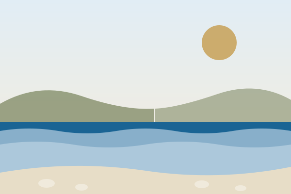

שכבה עבה של עבר ונציאני, בריטי וצרפתי הפכה את קורפו לאי הכי "אירופאי" ביוון - סמטאות אבן, מגרשי קריקט וקתדרלות לצד 217 ק"מ של קווי חוף עוצרי נשימה. לפני שצוללים למסלול המפורט, הנה כל מה שכדאי לדעת כדי לתכנן טיול חכם.
🏛️ כ-400 שנה תחת שלטון ונציאני🌊 217 ק"מ קו חוף✈️ כשעתיים וחצי טיסה מת"א🗣️ יוונית (אנגלית נפוצה מאוד בתיירות) מטבע: יורו (€)🌡️ ספטמבר: 26-28°C, ים חמים
🗺️ אי אחד, ארבעה אופי שונים
קורפו מוארכת בצורה שמאפשרת לכל אזור באי לפתח אישיות משלו: הצפון הפראי עם צוקי החימר הלבנים שלו, המזרח הרגוע והמשפחתי, המערב הדרמטי עם השקיעות המפורסמות, והדרום השטוח עם הדיונות והחופים האינסופיים. המסלול שבנינו לכם מסתובב בין הכל, אבל הנה תמונת מצב מהירה של מה מחכה בכל כיוון.
צפון
🏔️ צוקי חימר ותעלות טורקיז
הנוף הכי דרמטי באי: צוקי חימר לבנים (כף דראסטיס), מים בגוון טורקיז עז ותצורות סלע כמו תעלת האהבה. פחות מתאים למשפחות עם פעוטות בגלל הגישה התלולה, אידיאלי לצלמים.
מזרח
🏖️ חופי חלוקים ומים רגועים
מוגן מרוחות ולכן הים כאן חם ורגוע במיוחד - האזור האהוב על משפחות. כפרים ציוריים כמו קלאמי וברבטי, קרוב מאוד לקורפו טאון ולנמל התעופה.
מערב
🌅 שקיעות אגדיות, ים קריר
חשוף לגלי הים היוני הפתוח - המים קרירים וגליים יותר, אך הנוף פראי ובלתי נשכח. כאן נמצאות חלק מהשקיעות המצולמות ביותר ביוון, בפלאוקסטריצה ובלוגאס.
דרום
🏜️ דיונות חול וחופים אינסופיים
שטוח, פחות תיירותי ומפתיע: דיונות חול ליד אגם קוריסיון, חופים ארוכים ורחבים ואווירה צעירה יותר. אידיאלי לספורט ימי כמו קייט-סרפינג.
🚗 טיפים מהירים לנהיגה באי
נוהגים בצד ימין בדיוק כמו בישראל, אך הכבישים ההרריים בצפון ובמערב צרים ומתפתלים במיוחד - רכב קטן/קומפקטי בדרך כלל נוח יותר לתמרן בהם מרכב גדול. תכננו זמן נסיעה נדיב בין אזורים.
ספטמבר בקורפו נעים במיוחד: ימים חמים (26-28°C), ערבים מתונים יותר, והים עדיין חם מהצטברות חום הקיץ. עדיין כדאי שכבה קלה לערבים ולטיולי שייט, ונעלי מים סגורות לחופי החלוקים.
👉 עכשיו, אחרי ההיכרות - בואו נצלול למסלול המפורט ליום-יום.
לוח הבקרה שלכם 🎛️
כאן מרוכזים סטטוס הטיול בזמן אמת, ההזמנות שלכם ורשימת הציוד - הכל נשמר בדפדפן ומתעדכן אוטומטית.
עד הטיסה
—
02.09.2026 · 15:40
אורך הטיול
7 ימים
02.09 – 08.09
מזג אוויר בקורפו
טוען...
מתחבר לתחזית חיה
היום במסלול
—
מקום הלינה
עדיין לא הוספתם פרטי לינה
—
רכב שכור
עדיין לא הוספתם פרטי רכב
—
המועדפים שלי
0
מקומות שמורים
הזמנה קרובה
—
התיעוד שלנו
0
מקומות עם ביקור, דירוג או הערה
ציוד ואריזה
0/0
פריטים מסומנים
תזכורות חשובות
רישיון נהיגה בינלאומי + דרכון בתוקף
מתאם חשמל (שקע אירופאי טיפוס C/F)
צ׳ק-אין אונליין לטיסת החזרה (08.09, 13:10)
קיצורי דרך מהדשבורד:
📋 הזמנות ואישורים
מסעדות, סיורים ופעילויות שהזמנתם מראש - שם, תאריך ושעה, מספר אישור וטלפון ללחיצה-לחיוג. נשמר בדפדפן בלבד.
הזמנה חדשה
עדיין לא הוספתם הזמנות. הוסיפו הזמנת מסעדה, סיור או פעילות כדי לשמור אישור ומספר טלפון ליד היד.
🎒 רשימת ציוד ואריזה
סמנו פריטים לפני הטיסה ולפני כל יציאה לחוף. נשמר בדפדפן בלבד.
🧳 לפני הטיסה▼🏖️ תיק חוף יומי▼
המדריך 📘
תכנון, בריאות ובטיחות, שפה וחיי יומיום, ושאלות נפוצות - הכול במקום אחד.
תכנון הטיול 🧭
מה יש ליד המלון, מתי הכי כדאי לנסוע, מה פתוח בכל עונה, כמה זה עולה, וכיצד מתנהלים עם כסף ותחבורה באי. השתמשו בתפריט הקפיצה למטה כדי לדלג ישר לנושא שמעניין אתכם.
גוביה הוא כפר נופש שקט על החוף המזרחי, כ-10 דקות נסיעה צפונית לעיר קורפו, בנוי סביב אחת המרינות הגדולות ביוון. הכול כאן בטווח של עד כ-15 דקות מהמלון - ברגל או בנסיעה קצרה.
⛵
מרינת גוביה
כ-5 דקות הליכה/נסיעה מהמלון (בהתאם למיקום המדויק בכפר). אחת המרינות הגדולות ביוון, עוגנות בה מאות יאכטות שייט. הטיילת סביבה עמוסה בטברנות, ברים ובתי קפה עם נוף לים - היעד הטבעי לארוחת ערב או טיול ערב.
חופים קרובים
חוף גוביה: קטן ושקט, ממש ליד המלון. חוף דאסיה: כ-5 דקות נסיעה צפונה - חוף ארוך ופופולרי עם מתקני ספורט ימי (קיאקים, פאראסיילינג) וביץ' בארים.
🥐
מסעדות, קפה ומאפיות
רצועת הטברנות והברים לאורך טיילת המרינה מציעה מגוון רחב לארוחת ערב, כולל דגים טריים. לאורך הכביש הראשי בגוביה יש גם בתי קפה ומאפיות/פררי מקומיות. ⚠️ שמות ובעלות של עסקים קטנים משתנים משנה לשנה - מומלץ לבדוק ב-Google Maps עם ההגעה איזה מקום פתוח ומדורג טוב כרגע.
🛒
סופרמרקטים, בתי מרקחת וכספומטים
גוביה היא כפר נופש מבוסס עם רצועת שירותים יומיומיים לאורך הכביש הראשי (הישן): Maria's Supermarket במרכז הכפר ורשת AB (Vasilopoulos) גדולה יותר כ-1.5 ק"מ צפונה, בית מרקחת מקומי, וכספומטים (כספומט Emporiki Bank בכיכר המרכזית). ⚠️ עסקים קטנים מתחלפים משנה לשנה - מומלץ לאמת מיקום מדויק ושעות פתיחה ב-Google Maps עם ההגעה.
🏛️
קונטוקאלי ושרידי הארסנל הוונציאני
קונטוקאלי (Kontokali): כפר שכן דרומה, כ-5 דקות נסיעה, עם מרינה נוספת קטנה יותר וכמה טברנות על החוף. ליד מרינת גוביה עצמה נמצאים גם שרידי מספנת ספינות ונציאנית מהמאה ה-16 (Gouvia Arsenal) - עצירה קצרה ומעניינת בטיול ערב. ⚠️ יש לאמת שעות ביקור.
🌇
שקיעה וטיול ערב
גוביה נמצאת על החוף המזרחי של האי, מול היבשת - השקיעה כאן היא מעל הגבעות, לא מעל הים. לשקיעה הקלאסית "מעל הים" סעו למערב האי (כ-30-40 דקות; ראו נקודות שקיעה בחלק האטרקציות). בערב, טיילת המרינה עצמה - מוארת ורגועה עם נוף ליאכטות - היא האופציה הנוחה ביותר להליכה קרובה למלון.
☀️
מזג אוויר חודשי בקורפו
קורפו הוא האי הירוק ביותר ביוון, מה שאומר גשמי חורף רבים לצד קיץ חם ושמשי.
חודש
טמפ' ביום (°C)
טמפ' ים (°C)
ימי גשם
מה מצפה לכם?
ינואר - פברואר
14°
15°
12-14
חורפי, קר וגשום מאוד. האי בתרדמת חורף ורוב בתי העסק לתיירים סגורים.
מרץ
16°
15°
9
ניצני אביב, האי פורח וירוק בצורה מרהיבה, אך עדיין לא מתאים לרחצה בים.
אפריל
19°
16°
7
מזג אוויר אידיאלי לטיולי טבע ורגליים. חג הפסחא נחגג בחודש זה והעיר מלאה.
מאי
24°
19°
4
פתיחת העונה הרשמית! חמים ונעים במהלך היום, ערבים קרירים. הים עדיין קריר יחסית.
יוני
28°
23°
2
אחד החודשים המומלצים! חם מספיק לבטן-גב, המים נעימים, ואין עומס תיירים מוגזם.
יולי - אוגוסט
32°+
26°
0-1
שיא הקיץ. חם מאוד, לח ועמוס במיליוני מבקרים. המים בטמפרטורה נעימה ומזמינה.
ספטמבר
28°
25°
5
החודש המנצח של קורפו. הים אגר חום כל הקיץ, עומס המבקרים יורד ומזג האוויר נעים.
אוקטובר
23°
22°
9
סוף העונה. ימים חמים לסירוגין עם סופות וגשמים פתאומיים. מחירים אטרקטיביים.
נובמבר - דצמבר
16°
18°
15
חזרה לעונת החורף. רטוב, קר ושקט מאוד ברחבי האי.
🗓️
עונתיות: מה פתוח ומתי?
שימו לב - הרבה מהמקומות במדריך הזה (טברנות כפריות, יקבים, מנזרים) פועלים רק בעונה. תכננו לפי זה.
❄️ נובמבר - מרץ (סגור)
רוב המלונות והריזורטים סגורים לגמרי
טברנות כפריות/חוף (כמו Ambelonas, Sunset Taverna) - סגורות או בשעות מצומצמות מאוד
Aqualand וכל פארקי המים - סגורים
ערים כמו קאבוס, בניצס - כמעט רפאים, ריקות מתיירים
טיסות שכר בינלאומיות לא פועלות (רק דרך אתונה)
מעבורות לפאקסוס/אנטיפאקסוס - מצומצמות מאוד
🌤️ אפריל-מאי, אוקטובר (חלקי)
רוב המלונות פותחים בהדרגה (חלקם רק מ-1 במאי)
יקבים כמו Theotoky ו-Pontiglio - פתוחים לרוב, שווה להתקשר לוודא
מנזרים ואתרים דתיים - פתוחים כרגיל, כולל פסחא (מרץ/אפריל - עמוס!)
ביץ' בארים - חלקם פותחים רק אחרי חג הפסחא
הים עדיין קריר יחסית (16-19°) - לא כולם ירצו לשחות
☀️ יוני - ספטמבר (הכל פתוח)
הכל פתוח במלואו - מלונות, טברנות, ביץ' בארים, יקבים
Aqualand ופארקי המים פועלים במלוא הקיבולת
מעבורות לפאקסוס פועלות בתדירות גבוהה
יולי-אוגוסט: עומס מקסימלי, מומלץ להזמין מקום מראש בכל מסעדה
יוני וספטמבר: "המתיקות שבאמצע" - הכל פתוח אך פחות עמוס מיולי-אוגוסט
💡 טיפ זהב: אם אתם מתכננים לבקר במקום ספציפי שמופיע במדריך (כמו יקב, טברנה כפרית מבודדת, או אתר עם שעות מוזרות) בתחילת/סוף העונה (אפריל-מאי או אוקטובר-נובמבר), התקשרו או בדקו אתר/פייסבוק מראש. שעות הפתיחה משתנות משנה לשנה ולעיתים תלויות במזג האוויר או בהחלטת הבעלים.
כמה עולה יום בקורפו? תקציב יומי לזוג
הערכה גסה המבוססת על המחירים שמופיעים במדריך זה (מסעדות, ביץ' בארים, פעילויות). מיועדת לזוג; להוסיף כ-30-40% לכל ילד.
🎒 יום תקציבי
ארוחת בוקר (בית קפה מקומי)€10-14
חוף ציבורי (ללא מיטות שיזוף)€0
ארוחת צהריים (טברנה עממית)€25-35
קפה/גלידה אחה"צ€8-10
ארוחת ערב (טברנה מקומית)€35-45
דלק/חניה€10-15
סה"כ ליום לזוג:€90-120
✨ יום מפנק
ארוחת בוקר (בבית מלון/קפה יוקרתי)€25-35
מיטות שיזוף בביץ' בר יוקרתי€30-50
ארוחת צהריים + קוקטיילים בים€60-80
פעילות (סירה/צלילה/יין)€80-150
ארוחת ערב במסעדת שף / Fine Dining€90-140
דלק/חניה/טיפים€20-25
סה"כ ליום לזוג:€305-480
💡 טיפ: רוב המטיילים נופלים באמצע - יום "בינוני" סביר עם ארוחה טובה אחת ושאר הזמן חסכוני נע סביב €150-220 לזוג ליום, לא כולל לינה. המחירים לא כוללים עלות שכירת רכב (~€25-45/יום) והלינה עצמה, ומשתנים לפי עונה.
💰 נורמות טיפים והמרת מטבע
🙋 כמה נהוג לתת טיפ ביוון?
🍽️ מסעדות וטברנות
5-10% על שירות טוב, או פשוט לעגל את החשבון כלפי מעלה. במסעדות יוקרה - עד 10-15%. לא חובה, אך מקובל ותמיד מוערך.
☕ בתי קפה ובארים
לא מצופה טיפ על קפה/משקה בודד בבר. בישיבה עם שירות מלא - כמה מטבעות או עיגול קטן מספיקים.
🚕 מוניות
עיגול כלפי מעלה מקובל. נסיעה קצרה: €1-2. אם הנהג עזר עם מזוודות או נהג נסיעה ארוכה - כמה יורו נוספים.
🏨 מלונות וסיורים
סבל/חדרנית: €1 ליחידה/יום. מדריך טיול פרטי: €10-20 לאדם לחצי יום. עדיף במזומן, כדי שהכסף יגיע ישירות לעובד.
💱 ממיר מטבע מהיר
🇮🇱 שקלים (ILS)-
🇺🇸 דולר (USD)-
🇬🇧 פאונד (GBP)-
⚠️ שערים משוערים בלבד, עשויים להשתנות יומית. בדקו שער עדכני לפני הנסיעה בבנק או באתר כמו XE.com.
שערים משוערים בלבד · עודכן לאחרונה: יולי 2026
🚗 תחבורה, נהיגה והתניידות באי
🚌
תחבורה ציבורית
אוטובוסים כחולים: משרתים את העיר קורפו והפרברים הקרובים.
הדרך המומלצת לחקור את האי לעומק. חובה להצטייד ברישיון נהיגה בינלאומי (מנייר) בנוסף לפלסטיק. מומלץ לשכור רכב קומפקטי בגלל הסמטאות הצרות בכפרים.
⛽
דלק וחניה
תחנות דלק: מתדלק יעשה הכל עבורכם, אין שירות עצמי. רובן נסגרות ב-21:00. חניה בעיר: מומלץ לחנות בחניון הענק של רחבת ה-Spianada בתשלום יומי נמוך. טעינת רכב חשמלי (EV): תשתית מצומצמת מאוד באי - מעט עמדות טעינה, בעיקר ליד סופרמרקטים ובחלק מבתי המלון. אם שכרתם רכב חשמלי, בדקו זמינות מראש באפליקציות כמו PlugShare/Chargemap. ⚠️ המצב משתנה - יש לאמת לפני הנסיעה.
🛣️
כבישי אגרה (Tolls)
ברחבי האי קורפו אין כלל כבישי אגרה!
(תתקלו באגרות רק אם תקחו מעבורת ליבשת יוון ותנהגו לכיוון אתונה או סלוניקי).
📍
נהיגה מגוביה - הבסיס שלכם
לעיר קורפו העתיקה: כ-15 דקות (כ-9 ק"מ), ישר על כביש החוף.
לשדה התעופה: כ-15-20 דקות (כ-8 ק"מ).
לחופי הצפון (ברבטי, ניסאקי, קאסיופי): גוביה כבר באמצע הדרך צפונה, כך שהנסיעה קצרה משמעותית מאשר מהעיר עצמה.
לחופי המערב (פלאוקסטריצה, גליפאדה, ארמונס): יש לעבור דרך/סביב העיר קודם - הוסיפו כ-10-15 דקות לזמנים בטבלת זמני הנסיעה למטה.
חניה: ⚠️ בדקו מול המלון מראש את אפשרויות החניה הפרטית; לאורך טיילת מרינת גוביה יש גם שטחי חניה ציבוריים.
⛴️
מעבורות (פרומים)
ליבשת יוון: מהנמל החדש בעיר קורפו לאיגומניצה, תדירות גבוהה במיוחד בקיץ. לאיטליה: קווים עונתיים לברינדיזי, בארי ואנקונה - פרטים מלאים בהמשך.
טבלת זמני נסיעה: כמה זמן לנהוג בין האזורים?
שכרתם רכב? הנה זמני הנהיגה המשוערים מהעיר קורפו (Corfu Town) לאזורי הנופש המרכזיים, כדי לתכנן את הימים שלכם נכון. הזמנים כוללים כבישי הרים מפותלים - אל תמהרו.
יעד
אזור
מרחק
זמן נהיגה
פלקאס (Pelekas)
מרכז/מערב
כ-13 ק"מ
~20 דק'
אגיוס גורדיוס
מערב
כ-18 ק"מ
~35 דק'
ברבטי (Barbati)
מזרח
כ-20 ק"מ
~30 דק'
ניסאקי (Nissaki)
מזרח
כ-22 ק"מ
~35 דק'
פלאוקסטריצה
צפון-מערב
כ-25 ק"מ
~35-40 דק'
רודה (Roda)
צפון
כ-36 ק"מ
~50 דק'
סידארי (Sidari)
צפון-מערב
כ-37 ק"מ
~50 דק'
קאסיופי (Kassiopi)
צפון-מזרח
כ-35 ק"מ
~55 דק'
אכרווי (Acharavi)
צפון
כ-44 ק"מ
~1 שעה
קאבוס (Kavos)
דרום
כ-46 ק"מ
~1 שעה עד 1:15
💡 טיפ תכנון: קורפו הוא אי מוארך, לא עגול - נסיעה בין שתי נקודות "קיצוניות" (למשל קאבוס בדרום לקאסיופי בצפון) עלולה לקחת כ-2 שעות ברציפות. עדיף לתכנן ימי טיול לפי אזור אחד (צפון, מרכז/מערב, או דרום) ולא לקפוץ בין קצוות האי באותו יום.
🏨 הטבלה הזו מחושבת מהעיר קורפו. אתם ישנים בגוביה, כ-10 דקות צפונית לעיר - כך שמתאימים את הזמנים: ליעדי צפון (ברבטי, ניסאקי, קאסיופי, רודה, אכרווי, סידארי) הורידו כ-10-15 דקות מהטבלה, כי אתם כבר באמצע הדרך. ליעדי מערב ודרום (פלקאס, אגיוס גורדיוס, פלאוקסטריצה, קאבוס) הוסיפו כ-10-15 דקות, כי צריך לעבור דרך/סביב העיר קודם.
📐 מחשבון מרחקים: כמה רחוק החוף מהמלון?
המחשבון מוגדר כברירת מחדל מגוביה (Gouvia) - מקום הלינה שלכם. בחרו יעד, או שנו את נקודת המוצא לכל מקום אחר באי.
* מרחק ישיר משוער × מקדם כפיפות כבישים. לניווט מדויק השתמשו בקישור למפות גוגל.
💡 ההערכה מבוססת על מרחק אווירי + מקדם תיקון לכבישי הרים מפותלים (טיפוסי לקורפו). המספרים בפועל עשויים להשתנות לפי מסלול, תנועה ומזג אוויר.
טיפי נהיגה ובטיחות בכבישי קורפו (חשוב לקרוא!)
הכבישים מחוץ לערים המרכזיות צרים מאוד, מפותלים על צלע ההר ולעתים חסרי שוליים ומעקות בטיחות. סעו לאט ובזהירות.
נהגים מקומיים רגילים לכביש, נוטים לנסוע מהר, לעקוף על קו הפרדה רצוף ולחתוך סיבובים. שמרו על ערנות שיא.
האי מוצף באופנועים וקטנועים שנוהגים לעקוף מימין ומשמאל בכל הזדמנות - השתמשו במראות ללא הרף.
משטרת התנועה עורכת בדיקות ינשוף תכופות בעיקר בעונת הקיץ. העונשים על נהיגה בשכרות כבדים - אל תשתו ותנהגו.
🛣️ מפתח סוגי כבישים - למה לצפות
🟢 כביש ראשי / נוח
כביש אספלט רחב, שני מסלולים. מתאים לכל רכב, נהיגה קלה. רוב הכבישים בין העיר לישובי החוף הגדולים.
🟡 כביש הררי מפותל
אספלט אך צר עם סיבובי מחסה חדים (כמו לפנטוקרטור, פלקאס, לאקונס). נהגו בהילוך נמוך בירידה, צפרו לפני עיקולים עיוורים. אין תחנות דלק בדרך - תדלקו מראש.
🟠 כביש כפרי צר ("הסחיטה")
ברוב הכפרים (פלאוקסטריצה, פלקאס, כפרי ההרים) הכביש מצטמצם לרוחב מכונית אחת עם קירות אבן משני הצדדים. קפלו מראות במידת הצורך. הרכב שנוסע במעלה - זכות קדימה (לא חוק, אלא נוהג).
🔴 כביש עפר / נדרשת הליכה
חלק מהחופים הכי יפים (מירטיוטיסה, פורטו טימוני) לא נגישים ברכב עד הסוף - חובה לחנות למעלה ולרדת ברגל (לעיתים 20-40 דקות הליכה תלולה). נעליים סגורות מומלצות.
⛴️ מעבורות מקורפו: ליבשת, לאיים ולאיטליה
🇬🇷 לאיגומניצה (יבשת יוון)
כמה חברות (בהן Kerkyra Lines ו-Kerkyra Seaways) מפליגות מהנמל החדש בעיר קורפו, בתדירות גבוהה במיוחד בקיץ. משך ההפלגה כ-70-90 דקות. מנמל לפקימי שבדרום האי יש גם קו מהיר יותר (כ-50 דקות), נוח יותר למי שישן באזור הדרומי.
🇮🇹 לאיטליה (ברינדיזי, בארי, אנקונה)
קווים עונתיים (בעיקר קיץ) מחברים את קורפו לנמלי איטליה: ברינדיזי (כ-7 שעות שייט), בארי (כ-9-11 שעות) ואנקונה (כ-20 שעות). פופולרי בקרב מטיילי אינטרייל וגיבוב איים.
🇦🇱 לאלבניה (סרנדה)
מעבורת מהירה לעיר סרנדה, כ-30 דקות שייט - פופולרי לביקור יום בפארק הלאומי בוטרינט. אל תשכחו דרכון בתוקף.
🏝️ לפאקסי ולאיים נוספים
הפלגות יומיות (בעיקר עונתיות) לאי פאקסי הציורי, לרוב כשעה-שעה וחצי שייט.
⚠️ חשוב: לוחות זמנים, מחירים ואפילו החברות המפעילות משתנים לפי עונה ומתעדכנים בתדירות. המידע כאן הוא בסיס לתכנון בלבד - יש לאמת ולהזמין מראש דרך אתרים כמו Ferryhopper או ישירות מול החברות, במיוחד בעונת השיא.
זה סיכום המידע לתכנון הטיול. לתכנון היום-יומי המפורט חזרו למסלול, או המשיכו לפרק בריאות ובטיחות:
בריאות ובטיחות 🚑
בתי חולים ומרפאות, מספרי חירום, וטעויות נפוצות של תיירים שכדאי להכיר מראש - כדי להתנהל באי בביטחה ובנוחות.
⚠️ מספרי טלפון ושעות מרפאות עשויים להתעדכן - מומלץ לאמת מול corfuhospital.gr לפני הנסיעה.
Corfu Medica
פרטי / תיירים
מרפאה פרטית רב-תחומית המיועדת בעיקר לתיירים ולגולים. עובדת בהסדר עם מרבית חברות הביטוח הבינלאומיות ומספקת שירות באנגלית מצוינת.
💡 טיפ חשוב: זכרו תמיד ליצור קשר עם מוקד החירום של חברת ביטוח הנסיעות שלכם מיד לפני או אחרי קבלת טיפול רפואי להסדרת התשלומים!
מספרי חירום (חיוג חינם מכל טלפון)
🆘
112
מוקד חירום כללי (אירופאי, עונה באנגלית)
👮
100
משטרה (Police)
🚑
166
אמבולנס (Ambulance)
🚒
199
מכבי אש (Fire Brigade)
🛡️
חייגו 171
משטרת התיירות. הכתובת שלכם לכל דיווח על גניבה, אובדן מסמכים, או סכסוך עסקי עם ספק מקומי.
טעויות נפוצות של תיירים בקורפו (ואיך להימנע מהן)
🚗 לוותר על רכב שכור או על הרישיון הבינלאומי
התחבורה הציבורית לכפרים ולחופים המבודדים דלילה. בלי רכב תפספסו את רוב הפנינים הנסתרות במדריך הזה. וזכרו: רישיון נהיגה בינלאומי הוא חובה חוקית לצד הרישיון הישראלי, גם אם חברת ההשכרה לא דורשת זאת בפועל.
🗺️ לתכנן יום שקופץ בין צפון לדרום האי
קורפו מוארך ולא עגול - נסיעה מקצה לקצה עלולה לקחת כשעתיים ברציפות. תכננו כל יום סביב אזור גיאוגרפי אחד (ראו טבלת זמני הנסיעה למעלה).
💧 להגיע למפלים בקיץ ולצפות למים זורמים
מפלי נימפס ואתרי טבע דומים מתייבשים כמעט לגמרי ביולי-אוגוסט. אם חשוב לכם לראות אותם זורמים - הגיעו באביב.
💳 להסתמך על אשראי בכל מקום
טברנות משפחתיות קטנות בכפרים, קיוסקים על החוף ורוכלים לעיתים קרובות עובדים במזומן בלבד. שאו תמיד יורו במזומן, במיוחד באזורים כפריים.
☀️ לזלזל בשמש וללכת יחפים על חלוקים
חלק מהחופים היפים ביותר הם חופי חלוקים שמתחממים מאוד בצהריים. הביאו נעלי מים, כובע ומים בכמות נדיבה - במיוחד לחופים ללא צל וללא קיוסק.
📅 לא להזמין מראש בשיא הקיץ
ביולי-אוגוסט מסעדות פופולריות, שכירת רכב, מיטות שיזוף בביץ' בארים מוצלחים ואפילו כרטיסי מעבורת יכולים להיות מלאים. הזמינו מראש ככל האפשר.
🏪 להניח שכל החנויות פתוחות ברציפות
חנויות רבות מחוץ לאזורי התיירות שומרות על שעת סיאסטה ונסגרות אחר הצהריים, ולעיתים גם ביום ראשון. תחנות דלק רבות סוגרות סביב 21:00 - תדלקו מבעוד מועד.
🐴 להתייחס לחיות כאל אטרקציה בלבד
במקומות כמו מקלט החמורים, כבדו את השילוט וההנחיות של הצוות - אלו בעלי חיים אמיתיים בשיקום, לא "פינת סלפי".
⚠️ הרשימה מבוססת על מידע כללי ומוכר על האי; פרטים ספציפיים (שעות, מחירים, זמינות) עשויים להשתנות - ראו את שאר המדריך ואת קטע השאלות הנפוצות לפרטים מלאים.
זה סיכום פרק בריאות ובטיחות. המשיכו לשפה וחיי היומיום, או בדקו את השאלות הנפוצות:
שפה וחיי יומיום 🇬🇷
קניות, סופרמרקטים ושירותים יומיומיים, לצד מילון שרידות בסיסי ביוונית - כדי להסתדר באי כמו מקומי.
בניגוד לערים אירופאיות גדולות, בקורפו אין קניוני ענק או מתחמי אאוטלט מובהקים. חוויית השופינג מתרכזת באווירה האותנטית של רחובות העיר העתיקה והחדשה.
רשת Hondos Center בעיר החדשה היא המקבילה הקרובה ביותר למונח "כלבו", ומציעה קוסמטיקה, בישום ואופנה בינלאומית.
🚶♂️
רחוב גיאורגיו תאוטוקי (Georgiou Theotoki)
הרחוב הראשי של העיר החדשה. כאן תמצאו מותגי אופנה מוכרים כמו Marks & Spencer, חנויות נעליים, רשתות בינלאומיות ובתי קפה הומים.
קומקוואט (Kumquat)הסמל של קורפו! פרי הדר ננסי שהובא מסין וגדל בשפע באי. נמכר כליקר מריר-מתוק, ריבות, פירות מסוכרים, סוכריות גומי ואפילו מוצרי קוסמטיקה. מותגים פופולריים: Lazaris ו-Mavromatis.
🫒
שמן זית ועץ זיתבאי יש למעלה מ-4 מיליון עצי זית. תמצאו כאן שמן זית כתית מעולה, סבוני זית טבעיים, ולצידם יצירות מרהיבות של אמנים מקומיים המגלפים קערות, כפות ופסלים מעץ זית מלא.
👜
מוצרי עור בעבודת ידסנדלים יווניים מסורתיים שנתפרים במקום, חגורות, ארנקים ותיקי עור משובחים. סמטאות העיר העתיקה מפוצצות בחנויות קטנות המציעות סחורה באיכות פרימיום ובמחירים הוגנים.
🏺
קרמיקה יוונית בעבודת ידכלי חרס, קערות וצלחות מצוירות בעבודת יד בדוגמאות ים תיכוניות מסורתיות, לצד רפליקות מוקטנות של אמפורות עתיקות. חפשו סדנאות קרמיקה קטנות בעיר העתיקה שבהן ניתן לצפות בקדר עובד ולקנות ישירות ממנו, ולא רק בחנויות מזכרות.
Diellas
רשת מקומית של קורפו, מחירים מצוינים וסחורה טרייה.
Sklavenitis
ענקית קמעונאות יוונית עם סניפי ענק ומבחר עצום של כל טוב.
AB Vassilopoulos
רשת איכותית עם מחלקות גבינות ויין מעולות במיוחד.
Lidl
הכרות בינלאומית, הסופרמרקט הזול והאהוב. מספר סניפים פזורים באי.
💊 בתי מרקחת (Pharmacies)
בתי המרקחת ביוון מסומנים בצלב ירוק בולט (המילה ביוונית: Φαρμακείο).
הרוקחים ביוון מיומנים במיוחד, רשאים לתת ייעוץ רפואי ראשוני, ולעתים קרובות יכולים לנפק תרופות שבישראל דורשות מרשם. כמעט כולם, במיוחד באזורי התיירות, דוברי אנגלית שוטפת.
🌙 בשעות הלילה ובסופי שבוע:
ישנה תורנות של בתי מרקחת תורנים. רשימה מודפסת מעודכנת תלויה תמיד על דלת הזכוכית של כל בית מרקחת סגור.
🚻 שירותים ציבוריים
בניגוד לישראל, שירותים ציבוריים חינמיים נדירים יחסית בקורפו מחוץ לאתרים תיירותיים מרכזיים (כמו כיכר ספיאנאדה, נמל קורפו החדש ותחנות אוטובוס מרכזיות). הנוהג המקובל הוא להשתמש בשירותים של בית קפה, מסעדה או ביץ' בר - בדרך כלל בתמורה להזמנת משקה קטן. חוף מאורגן עם ביץ' בר כמעט תמיד כולל שירותים לציבור. שימו לב לכך במיוחד בימי טיול ארוכים בכפרים או באתרי טבע מרוחקים (כמו קייפ דראסטיס או שבילי הליכה), שם לרוב אין שירותים כלל.
🇬🇷 מילון שרידות: משפטים בסיסיים ביוונית
רוב היוונים בקורפו דוברים אנגלית טובה, אך כמה מילים ביוונית תמיד מתקבלות בחיוך גדול ושירות חם יותר. הנה המשפטים הכי שימושיים, עם תעתיק עברי קריא.
👋 ברכות בסיסיות
שלום / היי: Γεια σου (יאסו)
בוקר טוב: Καλημέρα (קליימרה)
ערב טוב: Καλησπέρα (קליספרה)
לילה טוב: Καληνύχτα (קלינייכטה)
להתראות: Αντίο (אנדיו)
מה שלומך?: Τι κάνεις; (טי קאניס?)
🙏 נימוסים
בבקשה: Παρακαλώ (פרקלו)
תודה: Ευχαριστώ (אפחריסטו)
תודה רבה: Ευχαριστώ πολύ (אפחריסטו פולי)
כן: Ναι (נה)
לא: Όχι (אוחי)
סליחה: Συγγνώμη (סיגנומי)
🍽️ במסעדה ובחנות
כמה זה עולה?: Πόσο κάνει; (פוסו קאני?)
את החשבון בבקשה: Τον λογαριασμό παρακαλώ (טון לוגריאסמו פרקלו)
טעים!: Νόστιμο! (נוסטימו!)
לחיים!: Γεια μας! (יא מאס!)
מים: Νερό (נרו)
אין בעד מה: Παρακαλώ (פרקלו — אותה מילה כמו "בבקשה")
🧭 התמצאות
איפה ה...?: Πού είναι...; (פו אינה...?)
שירותים: Τουαλέτα (טואלטה)
חוף: Παραλία (פרליה)
ימינה / שמאלה: Δεξιά / Αριστερά (דקסיה / אריסטרה)
ישר: Ευθεία (אפתיה)
אני לא מבין/ה: Δεν καταλαβαίνω (דן קטלבנו)
🚨 חירום
עזרה!: Βοήθεια! (בואיתיה!)
קראו לרופא: Καλέστε γιατρό (קלסטה יאטרו)
קראו למשטרה: Καλέστε την αστυνομία (קלסטה טין אסטינומיה)
אני צריך עזרה: Χρειάζομαι βοήθεια (חריאזומה בואיתיה)
💡 טיפ הגייה
ביוונית ה-χ מבוטאת כמו כ' גרונית (כמו במילה "חלב"), וה-γ מבוטאת רכה יותר מ-ג' עברית (כמו y באנגלית לפני תנועות). אל תדאגו יותר מדי מדיוק — כל ניסיון מתקבל בברכה, ולעיתים קרובות בכוסית אוזו במתנה.
זה סיכום המידע המעשי לתכנון הטיול. לתכנון היום-יומי המפורט חזרו למסלול, או בדקו את השאלות הנפוצות:
מסלול הדגל 🌟
🗺️ מסלול ל-7 ימים בקורפו
תכנון מקיף, מדוקדק וחוויתי, מותאם לטיסה שלכם: ת"א (TLV) 15:40 ← קורפו (CFU) 18:15, ב-02.09. כל יום במסלול זה נבנה כדי למקסם את הזמן שלכם, למנוע פקקים ולהבטיח שילוב מנצח של תרבות, חופים, קולינריה וטבע. כללנו שעות מדויקות, זמני נסיעה, חניונים, נקודות צילום, והכי חשוב - תוכנית גיבוי מפורטת לכל יום למקרה של גשם או מזג אוויר סוער.
* שעות השקיעה המוזכרות במסלול הן הערכה כללית לתחילת ספטמבר בקו הרוחב של קורפו (כ-39.6° צפון), לא חישוב מדויק ליום/למקום הספציפי - השקיעה בפועל יכולה לנוע ב-±10 דקות בהתאם לתאריך המדויק, לתנאי מזג האוויר ולאופק המקומי. כדאי לבדוק שעה מעודכנת קרוב למועד (למשל באפליקציית מזג אוויר) לפני שמתכננים סביבה משהו קריטי.
📊 התקדמות הטיול
0 מתוך 7 ימים הושלמו
סמנו "הושלם" בראש כל יום כדי לעקוב אחרי הטיול שלכם. השמירה נשארת בדפדפן גם אם תסגרו את הדף.
ליד ה-"הושלם" בכל יום אפשר גם להזין כמה באמת הוצאתם באותו יום (€), כדי להשוות מול התקציב המשוער.
לא נמצאו פריטים ליום זה
זהו המסלול המלא ל-7 הימים. עכשיו אפשר לבדוק את החופים והמסעדות שמוזכרים לאורך הדרך:
—
🎢 אטרקציות ופעילויות
האי קורפו מציע מגוון עצום של פעילויות שיהפכו את החופשה שלכם לבלתי נשכחת.
בין אם אתם חובבי אדרנלין שמחפשים לקרוע את השטח על טרקטורון, זוג רומנטי שרוצה להפליג לעבר השקיעה,
או משפחה שמעוניינת ביום כיף בפארק מים – יש כאן הכל.
לפניכם המדריך המקיף ביותר לכל החוויות האפשריות באי, כולל מחירים, טיפים, ציוד מומלץ וקישורי ניווט ישירים.
ביוון ניתן לשכור סירת מנוע (עד 30 כ"ס) ללא צורך ברישיון משיט. זו הזדמנות לנווט בעצמכם ליום אחד, לחקור חופים נסתרים, מפרצונים שקטים ומערות שניתן להגיע אליהן רק מהים. השכירויות נפוצות מאוד באזור פלאוקסטריצה, קאסיאופי וניסאקי.
💰 80€ - 250€ + דלק⏱️ חצי יום / יום שלם👨👩👧👦 זוגות ומשפחות
🎒ציוד מומלץ: קרם הגנה, כובע, משקפי שמש, מגבות, הרבה מים קרים, צידנית, נרתיק אטום למים לטלפון.
⚠️ אין בידינו שם ספק/מפעיל ספציפי לצטט - ההזמנה מתבצעת בדרך כלל ישירות בחוף/במרינה עם ההגעה, ללא צורך (ולעיתים גם ללא אפשרות) להזמין מראש מרחוק. המחיר בפועל תלוי בגודל הסירה ובמשך השכירות - וודאו זמינות ומחיר מול הדוכן המקומי לפני שאתם מתכננים סביבו את שאר היום.
הקפידו לבקש הדרכה מקיפה מהצוות על תפעול המנוע והעוגן. השתדלו לא להתקרב קרוב מדי לסלעים או לחוף כדי לא לעקם את המדחף (הפרופלור), מה שיגרור קנס משמעותי. חוף החוף המזרחי (סביב ניסאקי) נחשב בטוח ושקט יותר לנהגים מתחילים.

🚢 קרוזים והפלגות מאורגנות
אם אתם מעדיפים להשאיר את הניווט למומחים, הפלגות מאורגנות הן פתרון נהדר. ישנם קרוזים יומיים לאיים פאקסוס ואנטי-פאקסוס, לשייט למערות הכחולות, או הפלגות שקיעה רומנטיות עם ארוחת ערב סביב קורפו טאון. בחירה מצוינת ליום של שקט ורוגע עם מוזיקה טובה ואווירה בינלאומית.
💰 35€ - 60€ לאדם⏱️ 6 - 9 שעות👨👩👧👦 מתאים לכולם
🎒ציוד מומלץ: בגד ים, מגבת גדולה, מצלמה, כדורים נגד מחלת ים (לרגישים), וז'קט קל לשעות הערב כי יש רוח בים.
הגיעו לפחות 45 דקות לפני שעת ההפלגה כדי לתפוס מקום טוב על הסיפון העליון (תחת צליה). בדקו את תחזית הים לפני שאתם מזמינים - אם צפויים גלים גבוהים, השייט לפאקסוס יכול להיות מטלטל במיוחד.
🤿 צלילת מיכלים (Scuba Diving)
המים הצלולים של הים היוני מציעים ראות נדירה מתחת למים. למרות שאין כאן שוניות אלמוגים כמו בים האדום, קורפו מתהדרת במערות תת-ימיות מרתקות, שרידי ספינות טרופות ותצורות סלע מרשימות. מתאים גם לצוללים מוסמכים וגם לאלו שרוצים לעשות "צלילת היכרות" ראשונה.
אל תתכננו טיסה ב-24 השעות שאחרי צלילת מיכלים בגלל ענייני שחרור חנקן מהדם. אזור פלאוקסטריצה נחשב לאזור הצלילה היפה ביותר באי בזכות הסלעים העמוקים והמים הקרים והצלולים.
🐠 שנורקלינג עצמאי ומודרך
פעילות קלילה, חינמית (אם יש לכם ציוד), שמתאימה לכל משפחה. החופים הסלעיים של קורפו מושכים דגים צבעוניים, כוכבי ים וקיפודי ים. ניתן גם לצאת לסיורי שנורקלינג מודרכים הכוללים נסיעה בסירה לריפים המרוחקים יותר בהם כמות הדגה עשירה משמעותית.
💰 חינם / 30€ לסיור⏱️ שעה - 3 שעות👨👩👧👦 לכל מי שיודע לשחות
🎒ציוד מומלץ: מסיכת שנורקל איכותית (מומלץ מסכת פנים מלאה לילדים), סנפירים, מצלמת גופרו, וחולצת לייקרה נגד שמש.
החופים החוליים (כמו גליפאדה) גרועים לשנורקלינג בגלל שהחול מעכיר את המים ואין סלעים לדגים. חפשו חופים סלעיים כמו קאסיאופי, ניסאקי או פלאוקסטריצה לחוויית שנירקול טובה יותר. היזהרו לא לדרוך על קיפודי ים!
🛶 קיאקים ימיים וסאפ (SUP)
למי שאוהב לשלב ספורט עם טבע. חתירה בקיאק ימי לאורך המצוקים המרשימים של קורפו מאפשרת גישה שקטה ואקולוגית למערות ולחופים שסירות מנוע לא יכולות להיכנס אליהם. רוב המועדונים מציעים גם השכרת גלשני סאפ (Stand Up Paddle).
💰 40€ - 70€ לסיור⏱️ 3 - 5 שעות👨👩👧👦 חובבי כושר קל, משפחות
🎒ציוד מומלץ: בגדי ים, חולצה קצרה רטובה (למניעת שפשפות), כובע עם שרוך (כדי שלא יעוף), קרם הגנה עמיד במים, מים לשתייה.
צאו מוקדם בבוקר! החל משעות הצהריים מתחילה לנשב ביוון רוח צפון-מערבית הנקראת "מאיסטרוס", שיכולה להקשות מאוד על החתירה חזרה לחוף, במיוחד בחוף המערבי.
🏜️ טיולי טרקטורונים ובאגים
אקסטרים
קורפו מלאה בשבילי עפר, כרמי זיתים וכפרים עתיקים, ודרך נוחה לחוות אותם היא על ארבעה גלגלים. השכרת טרקטורון (Quad) או באגי מאפשרת לכם חופש מוחלט לטפס לתצפיות הרריות ולהרגיש את הרוח. ניתן לשכור עצמאית או לצאת לספארי מודרך בשיירה.
הקפידו לנסוע תמיד עם קסדה! הכבישים בקורפו צרים ולעתים משובשים. אל תשכרו טרקטורון קטן מ-300 סמ"ק אם אתם נוסעים בזוג, אחרת הוא יתקשה לעלות בעליות ההרריות הקשוחות של האי.
🚙 ספארי ג'יפים להר הפנטוקרטור
הפסגה הגבוהה ביותר בקורפו, הר הפנטוקרטור, מחביאה כפרים נטושים כמו Perithia הישנה ושבילי שטח מאתגרים. סיור הג'יפים המודרך (בדרך כלל עם נהג מקומי) יקח אותכם לנקודות תצפית עוצרות נשימה ולמקומות שרכבים רגילים פשוט לא יכולים להגיע אליהם.
הזמינו רכיבה לשעות אחר הצהריים המאוחרות. האור היורד בין עצי הזית יוצר אווירה קסומה והטמפרטורה נעימה הרבה יותר מאשר בשעות הצהריים החמות.
🎢 פארקי מים ענקיים
ילדים יעופו על זה
קורפו מתהדרת באחד מפארקי המים הגדולים באירופה – Aqualand, הממוקם במרכז האי. עם עשרות מגלשות מים, בריכות גלים, נהרות אבובים ומתחמי ילדים קטנים. זהו יום שלם של ניתוק טוטאלי ושמחה מתפרצת לכל המשפחה.
💰 ~35€ מבוגר / 25€ ילד⏱️ יום שלם (10:00-18:00)👨👩👧👦 משפחות עם ילדים, צעירים
🎒ציוד מומלץ: בגד ים כמובן, מגבות, כפכפים, קרם הגנה עמיד במים, ונרתיק/ארנק אטום למים לטלפון וכסף קטן.
רכשו כרטיסים מראש באתר האינטרנט שלהם - לעתים קרובות יש הנחות של 10%-15% לעומת הקופה ביום עצמו. הגיעו מוקדם בפתיחה כדי לתפוס מיטות שיזוף תחת שמשיה, הן נתפסות מהר מאוד!
🏄♂️ ספורט ימי ואקסטרים בחוף
לאורך החופים המרכזיים של קורפו (כמו דאסיה, איפסוס, וסידארי) תמצאו מועדוני ספורט ימי המציעים הכל: אופנועי ים, מצנחי רחיפה נגררים (Parasailing), סקי מים, ווייקבורד ושלל אבובים מתנפחים ("בננה", "ספה" וכו') לכל החבר'ה יחד.
בדקו תמיד שהמועדון מורשה ומספק חגורות הצלה תקניות. לפעילויות האבובים המתנפחים, בקשו מהנהג להתאים את המהירות ליכולת שלכם – אם אתם עם ילדים צעירים, בקשו "נסיעה רגועה".
👨🍳 סדנאות בישול קורפיוטי ויווני
קולינריה היא חלק בלתי נפרד מהנשמה היוונית. סדנאות בישול באי (המתקיימות לרוב בחצרות פרטיות בכפרים או בוילות) מציעות חוויה תרבותית וטעימה. תלמדו להכין מנות מקומיות כמו פסטיצדה (Pastitsada), בורדטו (Bourdeto), וכמובן צזיקי אמיתי. בסוף הסדנה יושבים לארוחת משתה עם יין מקומי.
💰 70€ - 120€ לאדם (כולל ארוחה)⏱️ 3 - 4 שעות👨👩👧👦 חובבי קולינריה, זוגות
🎒ציוד מומלץ: בגדים נוחים שאפשר ללכלך קצת, תיאבון גדול מאוד (אתם הולכים לאכול את כל מה שתבשלו).
פעילות אידיאלית לחצי יום גשום או מעונן. אם אתם צמחונים או טבעונים, ציינו זאת מראש - המטבח היווני מבוסס המון על ירקות, והם ישמחו להתאים את התפריט עבורכם.
🍷 טעימות יין ויקבים מקומיים
לקורפו יש היסטוריית יין מרתקת וזני ענבים מקומיים שנדיר למצוא מחוץ לאי, כמו ה-Kakotrygis הלבן וה-Petrokoritho האדום. ביקורים ביקבים היסטוריים (כמו אחוזת Theotoky בעמק רופה) כוללים סיור בכרמים, הסבר על תהליך הייצור, וטעימות יין המלוות בגבינות ונקניקים מקומיים.
היין המקומי של קורפו הוא קליל, מינרלי ומרענן מאוד – אל תצפו ליינות אדומים כבדים כמו בצרפת או איטליה. מומלץ למנות נהג תורן אם אתם מגיעים ברכב שכור, המשטרה היוונית מחמירה בנושא נהיגה תחת השפעת אלכוהול.
🫒 סיור בתי בד וטעימות שמן זית
קורפו מכוסה בלמעלה מ-4 מיליון עצי זית, רובם מהזן הייחודי "Lianolia" שניטעו עוד בתקופת השלטון הוונציאני. סיור בבית בד מודרני (כמו The Governor) חושף את סודות ייצור שמן הזית הבריא בעולם (עשיר בפוליפנולים). הסיור כולל סדנת טעימות מקצועית (כמו שטועמים יין).
שמן זית מקורפו נחשב לבעל טעם פיקנטי-מריר חזק המעיד על איכותו הרפואית הגבוהה. אל תפספסו הזדמנות לקנות פחית או בקבוק איכותי ישירות מבית הבד כמזכרת קולינרית לבית.
🥾 הליכה ומסלולי טרק - Corfu Trail
לצד החופים והטברנות, לקורפו יש גם רשת שבילי הליכה מסומנת - "שביל קורפו" (The Corfu Trail), מסלול הליכה ארוך-טווח של כ-220 ק"מ שנחנך ב-2001 ועובר לאורך כל האי מדרום לצפון, במכוון הרחק ממוקדי התיירות ההמוניים - דרך מטעי זיתים עתיקים, כפרי הרים ומדרונות הר פנטוקרטור. את המסלול המלא עושים לרוב ב-10-15 ימי הליכה, אבל רוב המבקרים בוחרים קטע יומי אחד או שניים ליד מקום הלינה שלהם.
💰 חינם (מסלול ציבורי)⏱️ כמה שעות (קטע בודד) עד 10-15 ימים (המסלול המלא)👨👩👧👦 מטיילים פעילים ואוהבי טבע
🎒ציוד מומלץ: נעלי הליכה קרסוליים, כובע והגנה מהשמש (רוב המסלול לא מוצל), הרבה מים, ומפה או קובץ GPX מהאתר הרשמי מראש.
הקטעים בצפון (סביב הר פנטוקרטור) תובעניים ותלולים יותר; קטעי הדרום מתונים יותר ומתאימים גם למתחילים. סימוני הצבע והשילוט לאורך המסלול משתנים באיכותם בין קטע לקטע. ⚠️ מומלץ לאמת מראש מול האתר הרשמי (thecorfutrail.com) את מצב הסימון העדכני, מפות GPX והאם קיימים כרגע מדריכי טרק מקומיים מומלצים לפני שיוצאים לבד לקטעים מרוחקים.
🌟 לא בטוחים מה לבחור? אם יש לכם זמן לפעילות אחת בלבד – אנו ממליצים בחום על השכרת סירה לנהיגה עצמית. זוהי חוויה קורפיוטית קלאסית שלא תשכחו לעולם!
לשילוב הפעילויות האלו במסלול, או לבדיקת מזג האוויר וטיפי נהיגה - עברו למידע המעשי:
שאלות ותשובות
כל מה שרציתם לדעת על קורפו ❓
ריכזנו עבורכם 51 שאלות נפוצות שכל מטייל שואל לפני הנסיעה לאי, עם תשובות מפורטות, מעשיות וברורות שיעזרו לכם לתכנן את החופשה שלכם.
מציג את כל 51 השאלות
לא נמצאו שאלות התואמות את החיפוש
מתי כדאי לטוס לקורפו?▾
העונה הנוחה לטיסה היא מחודש מאי ועד תחילת אוקטובר. חודשי השיא (יולי-אוגוסט) חמים מאוד ומתאימים לרחצה אך עמוסים. אם אתם מעדיפים מזג אוויר נוח ופחות צפיפות, יוני וספטמבר מומלצים במיוחד.
כמה ימים כדאי להקדיש לחופשה באי?▾
כדי לטעום ממה שיש לאי להציע בצורה רגועה, מומלץ להקדיש 5 עד 7 ימים מינימום. אם ברצונכם לשלב גם מנוחה בבטן-גב וגם טיולים ברחבי האי וגיחות לאיים שכנים, 10 ימים יספקו לכם חופשה נינוחה וללא לחץ.
האם קורפו יעד מתאים למשפחות עם ילדים?▾
בהחלט! האי מתאים מאוד למשפחות ומציע מגוון עצום של מלונות "הכל כלול", חופים חוליים ורדודים, ופארקי מים אדירים (כמו Aqualand). היוונים אוהבים ילדים והאווירה מאוד משפחתית ובטוחה.
האם האי מומלץ לזוגות המחפשים חופשה רומנטית?▾
כן, קורפו נחשבת ליעד רומנטי במיוחד. העיר העתיקה מציעה סמטאות ציוריות בסגנון ונציאני, מסעדות גורמה מול הים, ומקומות כמו "תעלת האהבה" (Canal d'Amour) ומפרצי פלאוקסטריצה מספקים נופים עוצרי נשימה שזוגות יאהבו.
האם כדאי לשכור רכב בקורפו?▾
מומלץ מאוד. למרות שיש תחבורה ציבורית, רכב שכור יעניק לכם עצמאות מוחלטת להגיע לחופים מבודדים, לכפרים בהרים וליהנות מהאי בקצב שלכם ללא תלות בזמני האוטובוסים.
בעיר קורפו העתיקה יש אזורי חניה מוסדרים בתשלום (כמו ברוב הערים היווניות) בעלות שעתית מתונה - חפשו שילוט או סימון על הכביש. מחוץ לעיר, ליד חופים, כפרים וטברנות, החניה בדרך כלל חופשית וזמינה. פרטים מלאים בפרק תחבורה ונהיגה ←
איך מתדלקים את הרכב השכור?▾
ביוון תדלוק הוא לרוב בשירות עצמי, אך בתחנות רבות (ובעיקר מחוץ לערים) עדיין נהוג שהמתדלק עצמו יבצע את התדלוק - פשוט בקשו את סוג הדלק ("Diesel" או "Unleaded/Petrol") ושלמו בקופה. תחנות דלק נפוצות לאורך הכבישים הראשיים אך מתפזרות יותר בצפון ובמערב האי, אז מומלץ לא להוריד את המכל מתחת לחצי במסלולים המרוחקים. תדלקו מיכל מלא ממש לפני החזרת הרכב בשדה כדי להימנע מקנס תדלוק של חברת ההשכרה.
מהו המטבע המקומי?▾
המטבע המקומי ביוון ובקורפו הוא האירו (€).
האם נהוג לשלם באשראי או עדיף להצטייד במזומן?▾
כרטיסי אשראי מתקבלים כמעט בכל מקום (מלונות, מסעדות, סופרמרקטים וחנויות בעיר). עם זאת, חובה להצטייד גם במזומן לטובת טיפים, רכישות בדוכנים קטנים, נסיעות באוטובוס, תשלום על מיטות שיזוף וכפרים מרוחקים בהם התקשורת לקויה.
מהי העלות הממוצעת של ארוחה במסעדה?▾
ארוחה בטברנה מסורתית תעלה לרוב בין 15 ל-25 אירו לאדם (כולל מנה עיקרית, תוספת ושתייה). מסעדות יוקרה בעיר העתיקה או דגי ים טריים יעלו מטבע הדברים הרבה יותר.
איך מזג האוויר ביוני?▾
חודש יוני מציע מזג אוויר פנטסטי! הטמפרטורות עומדות סביב 28 מעלות ביום, שמיים כחולים ללא גשם ומי ים שכבר התחממו מספיק לשחייה, הכל לפני תחילת העומס המאסיבי של חודש אוגוסט.
האם יש כבישי אגרה בקורפו?▾
לא, אין שום כבישי אגרה באי קורפו. הנסיעה בכל הכבישים חופשית לחלוטין.
איפה כדאי להזמין מלון - בצפון, בדרום או במרכז?▾
מרכז: קרוב לעיר, מצוין לטיולי כוכב. צפון/צפון-מזרח: הררי, ציורי, וילות יוקרתיות ומפרצי אבן. מערב: החופים החוליים והיפים ביותר אך הנסיעה מפותלת. דרום: שטוח יותר, חופים ארוכים וכפרי מסיבות צעירים כמו קאבוס. המסלול במדריך הזה מבוסס על לינה בגוביה (Gouvia) - כפר נופש שקט עם מרינה, כ-10 דקות נסיעה צפונית לעיר קורפו: פשרה נוחה בין קרבה לעיר ובין נגישות לחופי המזרח והצפון.
מה המרחק מהשדה התעופה לעיר העתיקה?▾
שדה התעופה צמוד ממש לעיר. מדובר במרחק של כ-3 קילומטרים בלבד, שזה בערך 10 דקות נסיעה במונית.
איך מגיעים משדה התעופה ל-המלון שלכם בגוביה?▾
ברכב שכור (המומלץ במסלול הזה): נסיעה ישירה של כ-15-20 דקות (כ-8 ק"מ) מהשדה, דרך פרברי העיר ולאורך כביש החוף. במונית: תחנת מוניות ביציאה מהשדה; נסיעה לגוביה תעלה יותר מהנסיעה לעיר עצמה (⚠️ מומלץ לאמת מחיר מדויק מול הנהג לפני היציאה). הסעה פרטית: ניתן לתאם Transfer מראש דרך המלון או חברות מקומיות - נוח במיוחד עם מזוודות ואחרי טיסה ארוכה.
מהן שעות הפתיחה של החנויות בעיר?▾
רוב החנויות נפתחות ב-09:00, נסגרות לסייסטה ב-14:00, ונפתחות שוב מ-18:00 עד 21:00. באזורי התיירות של העיר העתיקה בעונת הקיץ, חנויות רבות פועלות ברצף ללא הפסקה ועד שעות הלילה המאוחרות.
האם יש "סייסטה" ביוון?▾
כן, מנוחת הצהריים היא מסורת מכובדת. בין השעות 14:00 ל-17:30 עסקים מחוץ לאזורי התיירות נסגרים. יש להימנע מהרעשה בכפרים בשעות אלו כדי לכבד את מנוחת המקומיים.
האם מי הברז בקורפו בטוחים לשתייה?▾
מי הברז בטוחים טכנית לצחצוח שיניים ומקלחת, אך יש להם טעם חזק של כלור ומינרלים והם אינם טעימים. ההמלצה החד-משמעית היא לקנות ולשתות מים מינרליים בבקבוקים (הזולים מאוד ביוון).
איזה סוגי שקעי חשמל יש בקורפו?▾
שקעי החשמל הם מסוג C ו-F אירופאיים סטנדרטיים, עם שני פינים עגולים (220V). מוצרי חשמל מישראל בעלי תקע דו-פיני יתאימו ללא צורך במתאם. תקע תלת-פיני (עם הארקה) דורש מתאם אירופאי.
עם פעוט - להביא עגלה או מנשא?▾
העיר העתיקה מרוצפת באבן וסמטאות צרות, מה שמקשה על ניווט עם עגלה כבדה. מומלץ מאוד להביא מנשא. עגלת טיולון קלה תתאים לאזורי הטיילת ולכפר הנופש עצמו.
האם קורפו נגישה לכיסאות גלגלים?▾
הנגישות מאתגרת אך משתפרת. מרכז העיר העתיקה מישורי למדי אך מרוצף אבנים משתלבות. כדאי לדעת שיוון השקיעה רבות במערכת SEATRAC, כך שישנם מספר חופים בקורפו עם מתקן המסייע לכיסאות גלגלים להיכנס ישירות לתוך הים.
מהם המאכלים המקומיים שאסור לפספס?▾
המטבח בקורפו מושפע מהוונציאנים. חובה לטעום Pastitsada (תבשיל בקר/תרנגול ברוטב עגבניות ותבלינים על פסטה), Sofrito (בקר דק ברוטב יין לבן, שום ופטרוזיליה), ו-Bourdeto (תבשיל דגים חריף).
האם יש מסעדות כשרות בקורפו?▾
כן, בעונת התיירות פועל בקורפו בית חב"ד המפעיל מסעדה כשרה למהדרין ומספק ארוחות שבת. מעבר לכך, ניתן לאכול דגים טריים וירקות בטברנות, אך כמובן שאין להן תעודת כשרות.
מה זה "קומקוואט"?▾
קומקוואט הוא פרי הדר קטן (בגודל ענב גדול) עם קליפה מתוקה ותוך חמוץ. הוא הובא לאי מסין במאה ה-19 והפך לסמלו של האי. התוצרת המוכרת ביותר שלו היא ליקר הקומקוואט הכתום המוגש כדז'סטיף.
האם צריך להשאיר טיפ במסעדות וכמה?▾
כן, נהוג להשאיר טיפ. המקובל הוא לעגל את החשבון כלפי מעלה או להשאיר סביב 10% אם השירות היה טוב. מומלץ תמיד להשאיר את הטיפ במזומן על השולחן ולא לחייב באשראי, כדי לוודא שהוא מגיע למלצר.
מהן חופי הים הכי יפים באי?▾
קורפו שופעת חופים עוצרי נשימה. הבולטים הם Porto Timoni (מפרץ כפול ומרהיב), Paleokastritsa (מים צלולים קפואים), Glyfada (חול זהוב) ו-Canal d'Amour המפורסם בסלעיו.
האם החופים חוליים או חופי אבנים?▾
גם וגם. ככלל אצבע: החופים בחוף המזרחי והצפון-מזרחי הם חופי חלוקי נחל (מים צלולים מאוד אך קשה ללכת יחפים), בעוד החופים במערב ובדרום האי הם לרוב חופי חול זהוב. קחו נעלי ים ליתר ביטחון!
כמה עולה להשכיר שמשיות ומיטות שיזוף?▾
המחיר נע לרוב בין 10 ל-25 אירו לסט של שתי מיטות ושמשייה ליום שלם. בחופים ציבוריים מסוימים תוכלו לקבל את המיטות בחינם בתמורה להזמנת אוכל ושתייה מהטברנה הסמוכה.
האם ניתן למצוא חופי נודיסטים בקורפו?▾
כן, החוף המפורסם ביותר לנודיסטים (באופן לא רשמי אך מקובל לחלוטין) הוא חוף Myrtiotissa במערב האי, שתואר על ידי הסופר לורנס דארל כ"חוף היפה בעולם".
איפה נמצאת פלאוקסטריצה ומה יש לעשות שם?▾
פלאוקסטריצה נמצאת בחוף המערבי. זהו אזור של חמישה מפרצי טורקיז מרהיבים עם מים קרים במיוחד. ניתן לשכור שם סירות קטנות למערות כחולות, לעלות למנזר העתיק שבראש ההר, וליהנות מהנוף.
מה כדאי לעשות ביום גשום בקורפו?▾
בקורפו יש הרבה מוזיאונים מצוינים! בקרו בארמון אכיליון (Achilleion Palace), מוזיאון האמנות האסייתית, המוזיאון הארכיאולוגי של קורפו (כניסה כ-6€, כרטיס משולב עם מוזיאון האמנות האסייתית ומבצרי העיר בכ-14€), כנסיית ספירידון הקדוש, או פשוט תיהנו משופינג ומטברנות מקורות בעיר העתיקה. ⚠️ שעות פתיחה משתנות בין עונת החורף לקיץ ומתעדכנות מעת לעת - מומלץ לאמת מול האתר הרשמי לפני ההגעה.
האם אפשר לשוט מקורפו לפקסי ואנטי-פקסי?▾
לחלוטין. זו אחת האטרקציות הפופולריות ביותר! האיים השכנים פקסי (Paxos) ואנטי-פקסי (Antipaxos) מציעים מים בצבע טורקיז-קריבי מערות ימיות ועיירות דייגים ציוריות. חובה להקדיש לזה יום שלם.
כמה זמן לוקח המעבורת לפקסי?▾
מעבורת מהירה (Flying Dolphin) מנמל קורפו העיר תיקח כשעה; מנמל לפקימי (Lefkimmi) בדרום האי - כ-45 דקות בלבד. כל קווי המעבורות מקורפו ←
האם ניתן לבקר באלבניה הסמוכה?▾
כן, אלבניה קרובה מאוד (מעבורת לסרנדה כ-30 דקות) - רבים מנצלים את הקרבה לביקור בפארק הלאומי בוטרינט (Butrint), אתר מורשת עולמית מרתק. אל תשכחו דרכון! כל קווי המעבורות מקורפו ←
איפה יוצאות ההפלגות ואיך מזמינים?▾
רוב ההפלגות לפקסי, אלבניה והיבשת יוצאות מנמל קורפו החדש (New Port). ניתן להזמין אונליין, בסוכנויות ברחבי העיר או בדוכנים שבנמל - כדאי להזמין יום-יומיים מראש בעונת הקיץ. כל קווי המעבורות מקורפו ←
מה קוד הלבוש לכנסיות ומנזרים ביוון?▾
הקפדה על לבוש צנוע: כתפיים וברכיים חייבות להיות מכוסות, לגברים ונשים כאחד. ברוב המנזרים הפופולריים התיירים מקבלים בכניסה "חצאית מעטפת" או צעיף לכסות את עצמם לפני הכניסה.
האם בטוח לטייל בקורפו בלילה?▾
קורפו נחשבת ליעד בטוח מאוד ושיעור הפשיעה בה נמוך. אין שום בעיה לטייל בלילה בטיילת, בסמטאות העיר או בכפרים. כמו בכל מקום, מומלץ להפעיל הגיון בריא.
מהם מקומות הבילוי המרכזיים בערבים (חיי לילה)?▾
לעיר קורפו יש חיי לילה קלאסיים (ברים, יין, בתי קפה ב-Liston). צעירים המחפשים מסיבות ומועדונים ימצאו אותם בעיירה קאבוס (Kavos) בדרום, או באזורי דאסיה (Dassia) ואיפסוס (Ipsos) במזרח.
האם קורפו טאון (העיר) פתוחה בלילה?▾
כן, אזור ה-Liston בעיר העתיקה מואר באורות רומנטיים, בתי הקפה והברים פתוחים עד השעות הקטנות, ויש נגני רחוב ואווירה קסומה. חנויות המזכרות פתוחות לרוב עד 22:00 או 23:00.
איך עובדת התחבורה הציבורית באי?▾
התחבורה מחולקת לשתי חברות: "אוטובוסים כחולים" (עירוניים) ו-"אוטובוסים ירוקים" (בינעירוניים). המערכת זולה ואמינה למדי, אך התדירות לכפרים הנידחים עשויה להיות נמוכה מאוד (לפעמים פעם או פעמיים ביום).
מה ההבדל במיקום התחנות של האוטובוס הכחול והירוק?▾
האוטובוסים הכחולים יוצאים מכיכר סן רוקו (San Rocco Square) במרכז העיר. תחנת האוטובוסים הירוקים (Green Bus Terminal) ממוקמת קרוב יותר לנמל החדש, במרחק של כ-15 דקות הליכה ממרכז העיר.
האם יש אובר (Uber) או בולט ביוון/קורפו?▾
אפליקציית Uber עובדת בקורפו, אך היא מזמינה מוניות רגילות (Uber Taxi) על פי תעריף המונה הרגיל, ולא נהגים פרטיים כמו בארה"ב. זה נוח למניעת ויכוחים על מחירים. בולט (Bolt) אינה נפוצה.
איך משיגים מונית ומה התעריפים?▾
יש תחנות מוניות פזורות במרכז, במיוחד סביב כיכר סן רוקו והליסטון. חובה להפעיל מונה (מינימום נסיעה הוא סביב 5 אירו). לנסיעות מחוץ לעיר, רצוי לסגור מחיר מראש עם הנהג.
ניתן לרכוש סים מקומי (Cosmote, Vodafone, Nova) בשדה התעופה או בחנויות בעיר (דורש הצגת דרכון). מומלץ מאוד להשתמש באפליקציות eSIM (כמו Airalo) לפני הטיסה, זה קל, זול וזמין מיד עם הנחיתה.
האם יש פשע או כייסים שעלי להיזהר מהם?▾
קורפו אי שליו. תופעת הכיוסים נדירה אך קיימת לעתים באזורים צפופים בעונת השיא, במיוחד באוטובוס מהשדה לעיר. השגיחו על הארנק והטלפון בכיס הקדמי באזורים הומים, מעבר לכך האי בטוח לחלוטין.
אילו בעלי חיים או חרקים עשויים להוות מטרד?▾
כאי ירוק עם לחות גבוהה, יתושים מהווים מטרד משמעותי בקיץ. חובה להביא תכשיר דוחה יתושים ולבקש מהמלון מכשיר לחשמל. בסוף הקיץ (ספטמבר) ישנה לעתים נוכחות מוגברת של צרעות סביב פחי אשפה ומסעדות.
האם יש בית חב"ד בקורפו?▾
כן, קיים בית חב"ד פעיל בחודשי הקיץ והחגים. הוא מספק שירותי דת, ארוחות שבת קהילתיות ומסעדה כשרה. יש לבדוק מראש את שעות הפעילות והמיקום המדויק באתר חב"ד קורפו טרם ההגעה.
איזה פסטיבלים יש בקורפו במהלך השנה?▾
החשוב ביותר הוא חג הפסחא. בנוסף, בפברואר/מרץ נערך פסטיבל קרנבל ססגוני המושפע מהמסורת הוונציאנית. בקיץ כל כפר חוגג "פניגירי" (Panigiri) - חג כפרי מסורתי עם מוזיקה חיה, ריקודים וצליית כבש.
איך חוגגים פסחא בקורפו ומדוע זה כל כך מפורסם?▾
חגיגות הפסחא בקורפו מפורסמות בכל יוון. השיא מתרחש בשבת בבוקר כאשר התושבים זורקים כדי חרס ענקיים מהמרפסות שלהם לרחובות העיר לקול מחיאות הכפיים של האלפים, סמל לגירוש הרוע. זו חוויה תרבותית אדירה!
האם יש פארקי מים בקורפו?▾
כן, פארק המים Aqualand במרכז קורפו נחשב לאחד הגדולים והטובים באירופה וכולל עשרות מגלשות מים ואטרקציות. יש גם פארקים קטנים יותר כמו Hydropolis בצפון האי הקטנים ונעימים לילדים קטנים.
מהם מספרי החירום בקורפו?▾
כמו בכל האיחוד האירופי, מספר החירום המרכזי הוא 112 (חינם, גם מטלפון נייד, מקבלים מענה גם באנגלית) ומחבר לכל השירותים - משטרה, כיבוי אש ואמבולנס. באפשרותכם גם לחייג ישירות: 100 משטרה, 166 אמבולנס/מד"א יווני, 199 כיבוי אש. כדאי לשמור גם את מספר הקונסוליה הישראלית הקרובה (אתונה) ואת פרטי חברת ביטוח הנסיעות שלכם במקום נגיש.
זו השאלה האחרונה ברשימה. לחזרה לתכנון הטיול או לגילוי האי: